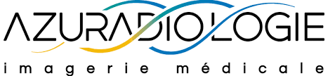
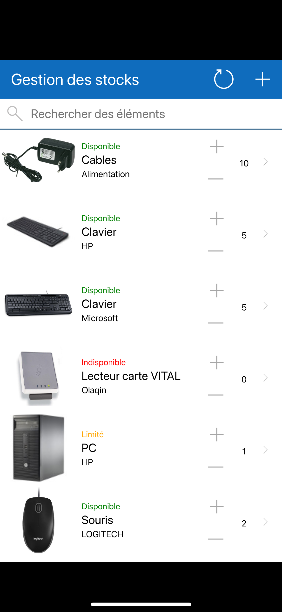
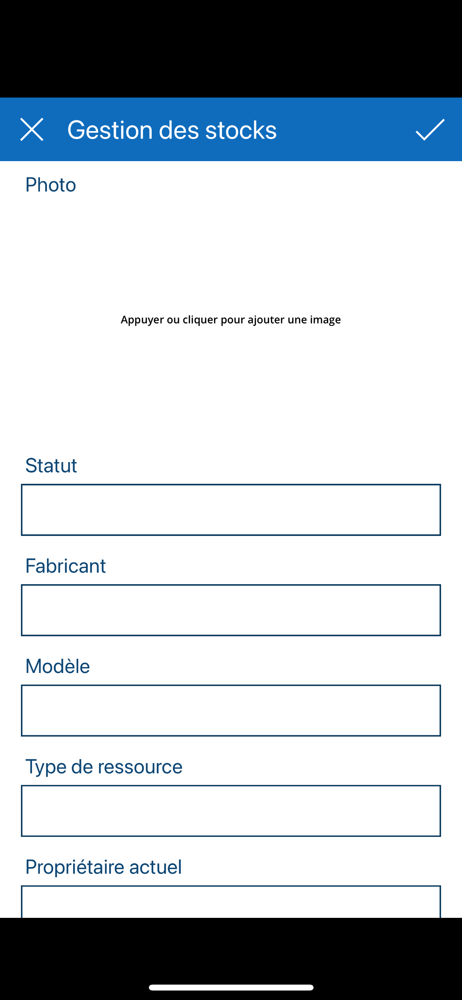
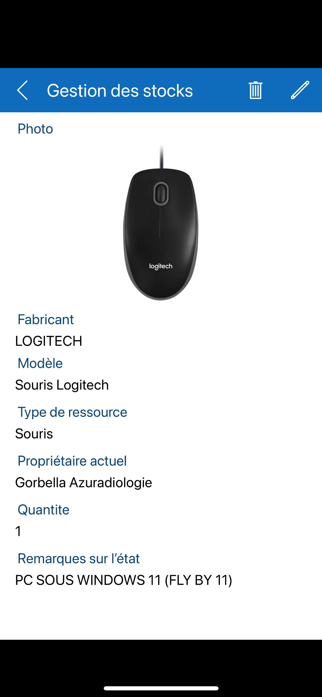
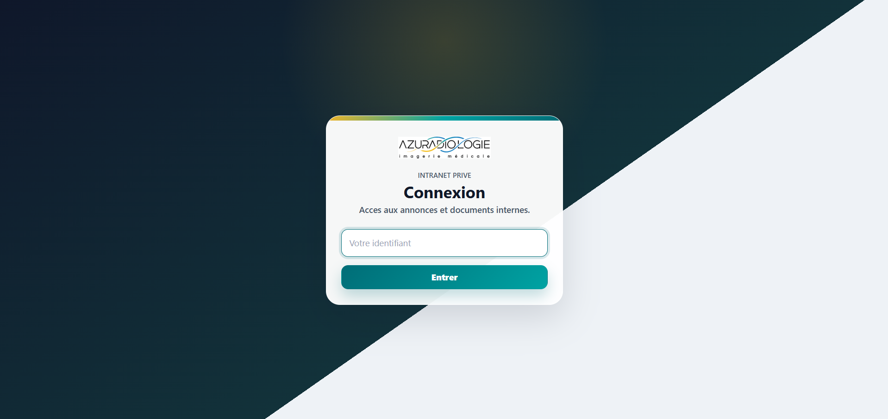

Contexte
Azuradiologie est un groupe d'imagerie médicale situé à Nice. Mon rôle consiste à intervenir sur l'informatique utilisée au quotidien : postes Windows, support aux utilisateurs, sauvegardes, outils internes et site web.
Cette alternance a commencé en septembre 2025 et se terminera en août 2027.
L'intérêt de cette alternance est d'être confronté à des besoins réels, dans un environnement où les outils doivent rester disponibles, clairs et fiables pour les équipes.

Missions principales
Support et parc informatique
- Gestion du parc informatique Windows.
- Préparation de postes avant déploiement sur site.
- Assistance aux utilisateurs sur les logiciels métier et les problèmes du quotidien.
- Dépannage, diagnostic et résolution d'incidents.
Sauvegarde, web et outils internes
- Mise en place et suivi de Veeam Backup.
- Maintenance du site web de l'entreprise.
- Ajout et modification d'éléments sur le site selon les besoins.
- Création d'outils internes pour améliorer l'organisation.
Application de gestion de stock
J'ai développé une application pour mieux suivre le matériel disponible. Elle permet de centraliser les informations, de rendre les mouvements de stock plus lisibles et d'envoyer des notifications automatiques lorsque certaines actions doivent être prises en compte.



Intranet d'annonces internes
J'ai aussi créé une application web d'annonces internes. Elle sert à publier et consulter des informations importantes dans un espace simple, plus adapté à une diffusion interne qu'un échange dispersé par messages.

Ce que l'alternance m'apporte
Cette alternance me fait progresser sur des missions concrètes : analyser un problème, proposer une solution, tester, expliquer et corriger si nécessaire. Elle me permet de travailler autant la technique que la communication avec les utilisateurs.